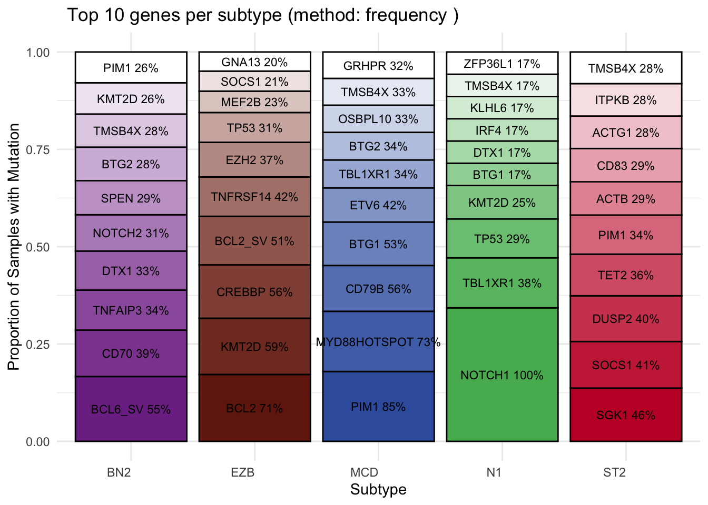
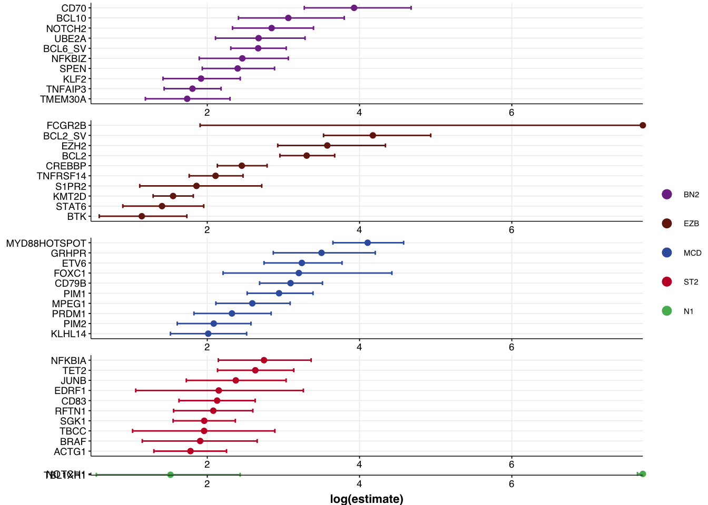
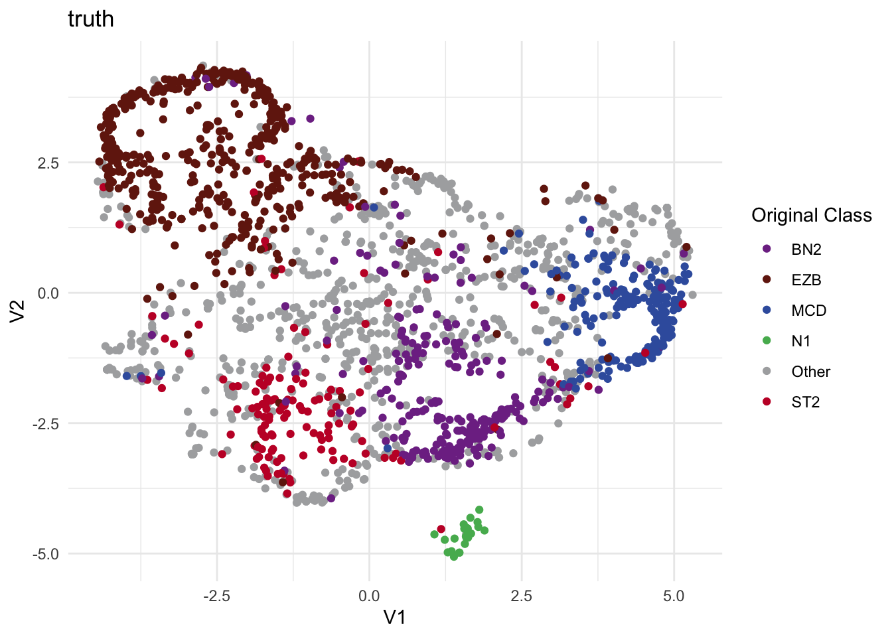
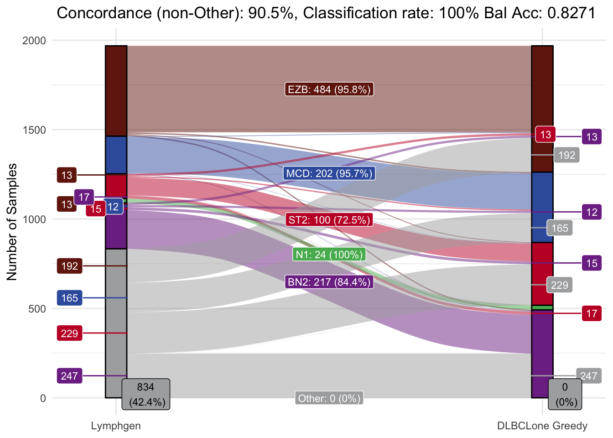
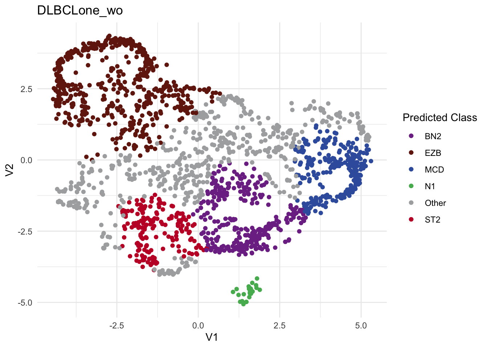
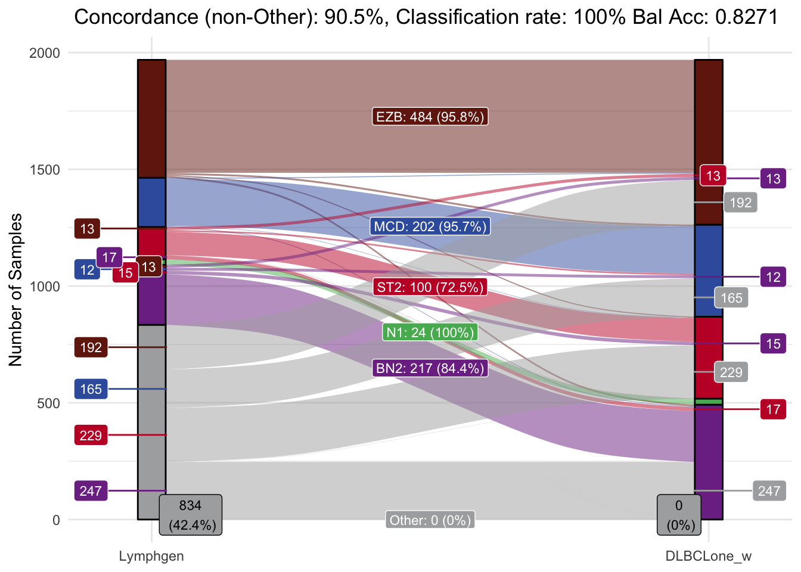
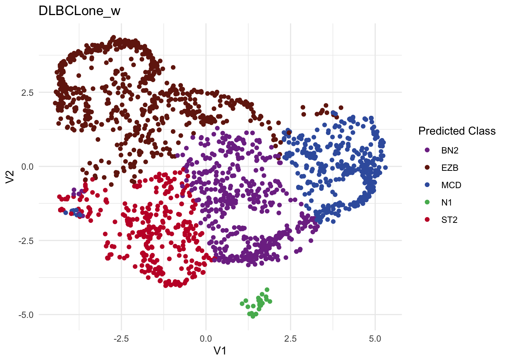

best_opt_model = DLBCLone_optimize_params(
#mu_everything$features,
metadata_df = dlbcl_meta_clean,
umap_out = mu_everything,
truth_classes = c("MCD","EZB","BN2","N1","ST2","Other"),
min_k=5,
max_k=13
)DLBCLone Functions - Optimizing Parameters
Overview of function
The DLBCLone_optimize_params function tunes the K value and a few thresholds based on the training data, working to maximize balanced accuracy or (optionally) another metric.
combined_mutation_status_df feature matrix data frame with one row per sample and one column per mutation
metadata_df data frame of metadata with one row per sample and three required columns: sample_id, dataset and the column containing the “truth” lable, which defaults to lymphgen
umap_out the output of make_and_annotate_umap
truth_classes vector of classes to use for training and testing (LymphGen default: c(“EZB”, “MCD”, “ST2”, “N1”, “BN2”, “Other”))
min_k lowest k in the range of values to try for KNN (default: 3)
max_k highest k in the range of values to try for KNN (default: 33)
Example
Let’s assume we are generally happy with the separation of samples in this latent representation. We can use DLBCLone_optimize_params to pick a combination of k (number of neighbors) and a few thresholds to categorize each sample based on its location and proximity to other points in the UMAP. Here, we give the original UMAP produced by make_and_annotate_umap and not the repojected UMAP, because this function will perform the sample-by-sample projection for us. Optimize for other will be set to TRUE as we are interested in high confidence predictions that are less likely to actually be “Other”.
knitr::kable(best_opt_model$best_params)| k | threshold | use_weights | optimized_accuracy | overall_accuracy | mean_balanced_accuracy | sensitivity | N1_sn | BN2_sn | ST2_sn | BN2_bacc | MCD_bacc | EZB_bacc | A53_bacc | Other_bacc | C1_bacc | C2_bacc | C3_bacc | C4_bacc | C5_bacc | ST2_bacc | threshold_outgroup | accuracy_out | na_option | num_classes | num_features | seed |
|---|---|---|---|---|---|---|---|---|---|---|---|---|---|---|---|---|---|---|---|---|---|---|---|---|---|---|
| 13 | 0.6 | TRUE | 0.898813 | 0.6383951 | 0.898813 | 0.8749128 | 1 | 0.8054475 | 0.6956522 | 0.8454807 | 0.9306097 | 0.9162663 | NA | 0.6258829 | NA | NA | NA | NA | NA | 0.8022226 | 0 | 0 | drop | 6 | 90 | 12345 |
Overview of classifications
posthoc_feature_enrichment
Interested in the most contributing mutations per subtype? Whether it be the most frequently mutated, or the most significantly mutated via chi square subtype vs. rest? posthoc_feature_enrichment can help evaluate structure and potential biases in your training data. If Fisher or Chi-square test is used, bar plots and forest plots will be produced.
sample_metadata Data frame containing sample metadata with class labels, by default in a column named “lymphgen”. Use label_column to specify a different column
features Feature matrix with one row per sample and one column per mutation feature
label_column Name of the column containing the class labels (default: “lymphgen”)
truth_classes Vector of class labels to consider (default: c(“BN2”,“EZB”,“MCD”,“ST2”,“N1”))
method Method to determine top features: “frequency” for most abundant features, “chi_square” for top differentially mutated features in the classes vs all other classes or “fisher” to compare in-class vs out-class feature frequency across all classes (default : “frequency”)
num_feats Number of top features to display per subtype (default: 10)
separate_plot_per_group If TRUE, creates separate plots for each group and also combines them with ggarrange (default: FALSE).
title Title for the plot (default: NULL)
p_threshold Maximum P value to retain (when method is fisher)
base_size Base font size used (passed to theme_Morons)
plots<- posthoc_feature_enrichment(
sample_metadata = best_opt_model$predictions,
features = best_opt_model$features,
method = "fisher"
)
plots$bar_plot
plots$forest_plot
basic_umap_scatterplot
A more advanced plotting function for the UMAP projections. This function can also cover predicted columns of your choosing.
optimized data frame containing at least V1, V2, sample_id, and grouping columns
plot_samples Optional character vector of sample_id’s to label in the plot
colour_by column name to color points by (default: truth_column)
truth_column name of the truth/ground-truth column
pred_column name of the predicted-class column
other_label label used for the outgroup/unclassified class
title plot title
use_plotly if FALSE and plot_samples provided, draw static
custom_colours custom color palette for the plot. If not provided, uses default GAMBL colors
basic_umap_scatterplot(
best_opt_model$prediction,
colour_by = "lymphgen",
pred_column = "lymphgen",
title = "truth"
)
make_alluvial
Plotting function make_alluvial generates detailed alluvial plots to visualize the concordance and discordance between original (e.g., Lymphgen) and predicted (e.g., DLBCLone) class assignments for samples.
optimized output from DLBCLone_optimize_params function
pred_column name of the column in predictions to use for the predicted class
pred_name name for the predicted class column
DLBCLone with outgroup optimization (“wo”) w for weighted, o for optimized for other.
make_alluvial(best_opt_model,pred_column = "DLBCLone_wo",pred_name = "DLBCLone_wo")
basic_umap_scatterplot(
best_opt_model$prediction,
colour_by = "DLBCLone_wo",
pred_column = "DLBCLone_wo",
title = "DLBCLone_wo"
)
DLBCLone_summarize_model
Generates and saves a set of summary plots as PDF, and tables for a DLBCLone model in a preallocated folder. This summary includes; UMAP scatterplots, alluvial plots, and oncoplots.
DLBCLone_summarize_model(
optimized_model = best_opt_model,
base_name="model_summaries/all_full_status"
)Example 2 Optimize for other FALSE
When looking at w for weighted, not wo for weighted and optimized for other, DLBCLone outputs its greedy search strategy, aiming to classify as many samples as possible, even at low confidence levels. This approach can reveal trends in the underlying data structure, but it also increases the risk of assigning low-confidence predicted labels.
DLBCLone without outgroup optimization (“w”) w for weighted.
make_alluvial(best_opt_model,pred_column = "DLBCLone_w",pred_name = "DLBCLone_w")
basic_umap_scatterplot(
best_opt_model$prediction,
colour_by = "DLBCLone_w",
pred_column = "DLBCLone_w",
title = "DLBCLone_w"
)
DLBCLone_ensemble_postprocess
This is an optional function you can run after DLBCLone_optimize_params. it will post-process KNN results across K to score consistency, optionally refine classified/Other cutoffs per-class and can assign composite classes. This is a more complex approach that may yield better results but is not yet fully validated.
optimized_model output of DLBCLone_optimize_params
other_min for comparing across a range of K values, this is the threshold for the number of K values a sample is classified as Other for it to be re-assigned as Other. Set this to a high value if you don’t want samples to be reassigned at all
assign_composites if TRUE: samples with split votes across multiple in-group classes will be assigned a composite class (e.g. “EZB/MCD”) instead of “Other”
any_split if TRUE: any split among in-group votes across the Ks tested will triggers reassignment (or composite)
optimize_per_class if TRUE: a range of thresholds will be tested per class to optimize the classification/Other cutoff
postprocess_params <- DLBCLone_ensemble_postprocess(
optimized_model = best_opt_model,
other_min = 3,
assign_composites = TRUE,
any_split = TRUE,
optimize_per_class = TRUE
)